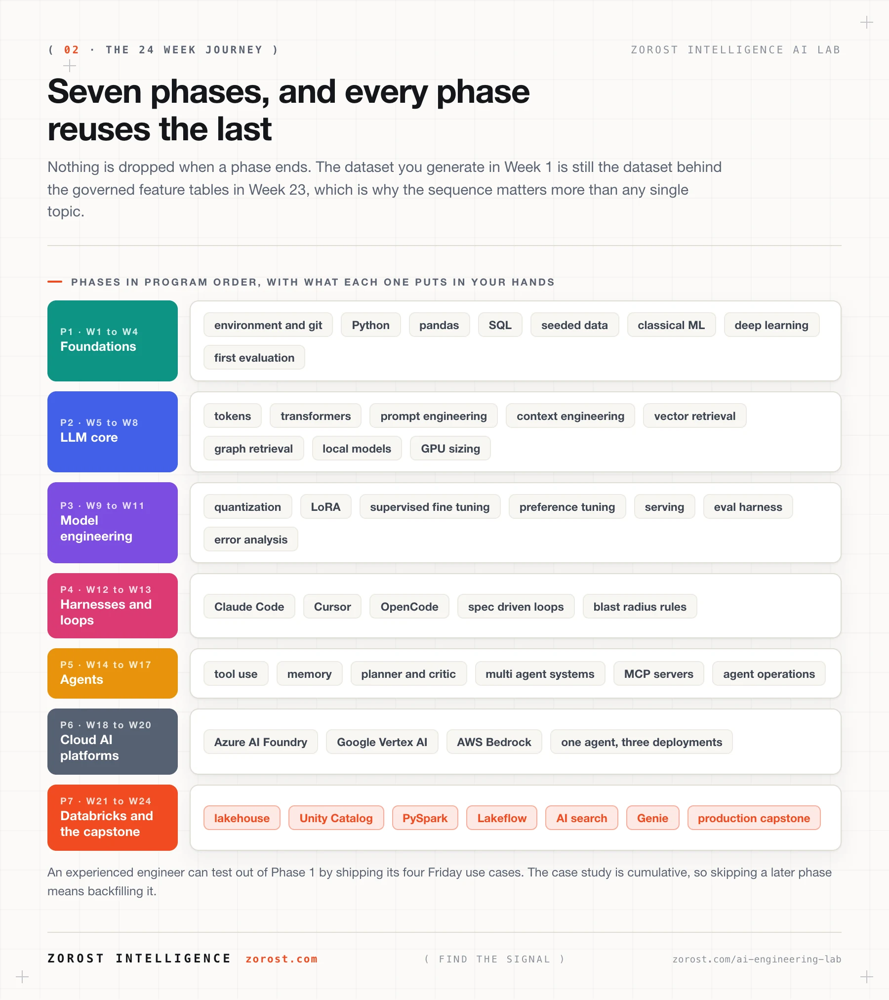
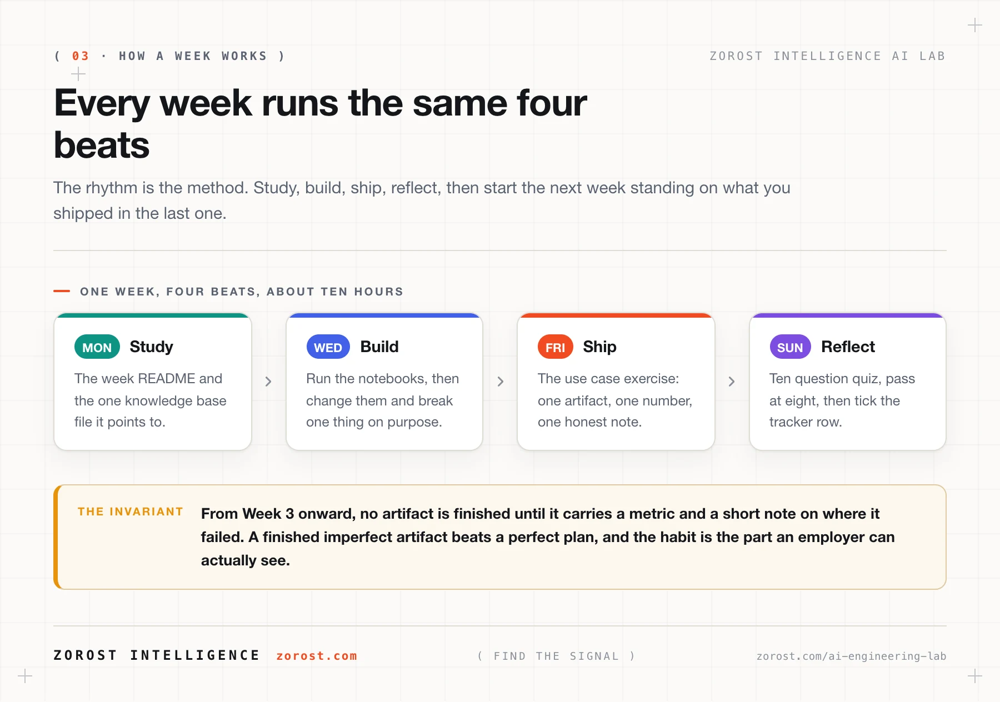
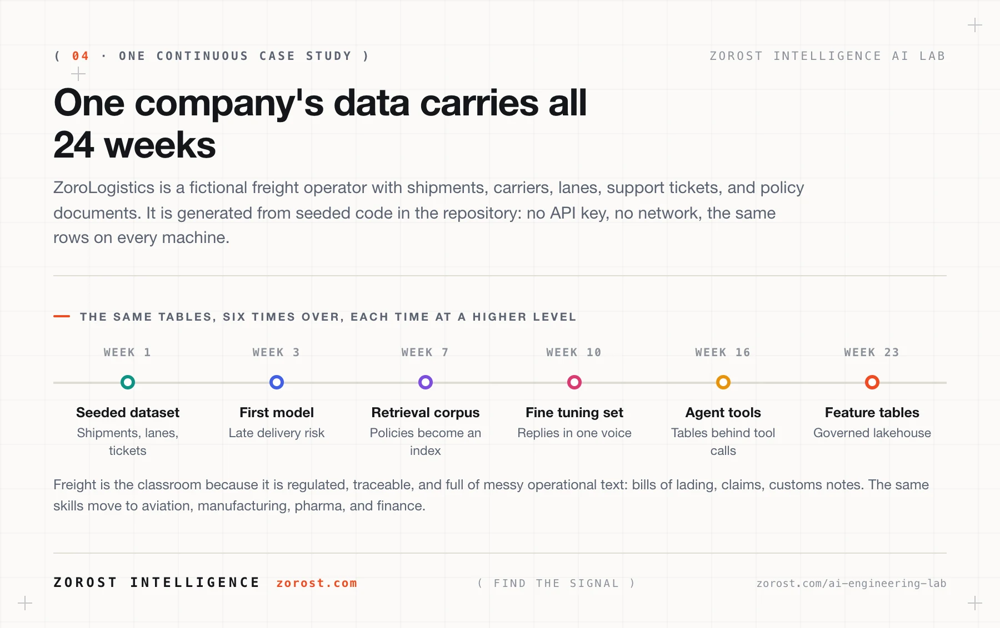
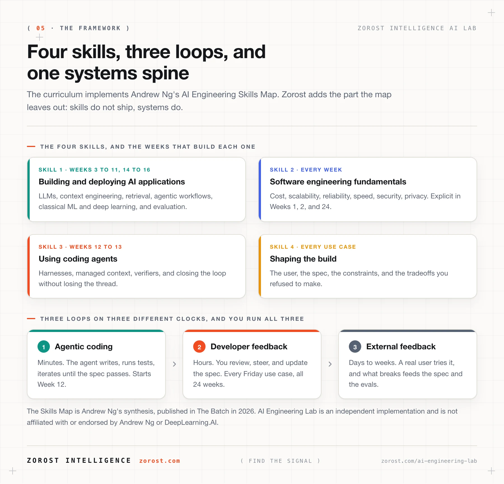
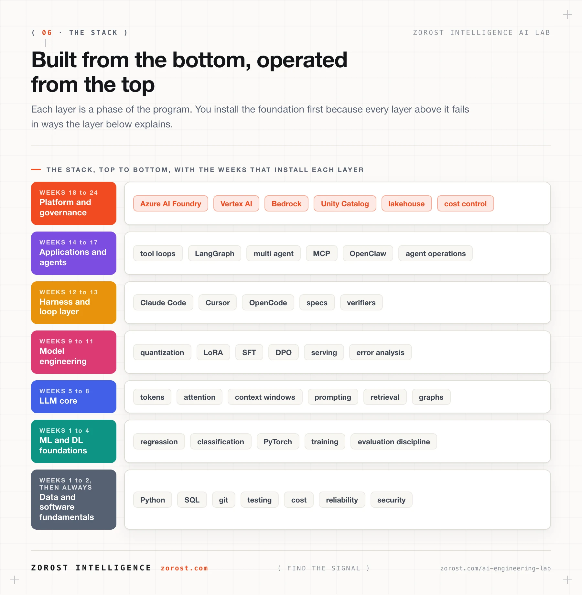
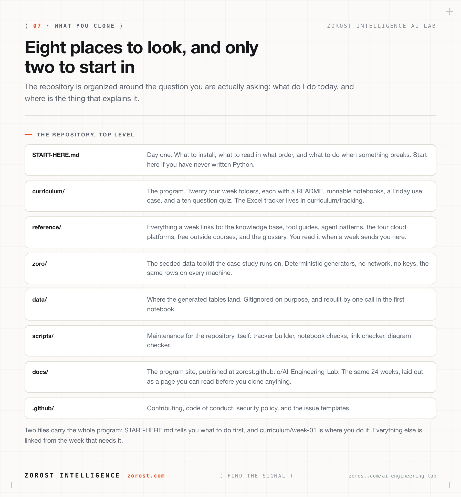

A curriculum, not a playlist
This is the sequence the Lab would hand a new engineer joining a generative AI, applied machine learning, or Databricks modernization team. Every week ends in something that runs, and from Week 3 on, nothing counts as finished until it carries a metric and an honest note about where it failed.
Nothing is dropped when a phase ends. The dataset you generate in Week 1 is the same dataset behind the governed feature tables in Week 23, which is why the order matters more than any single topic.

All 24 weeks, open in a click
Every week folder holds a README with the plan, the runnable notebooks, a Friday use case, and a ten question quiz. Filter by phase, then open the week you want to read.
Phase 1FoundationsWeeks 1 to 4
Python, data engineering, classical ML, and deep learning, taught the AI engineering way: every model ships with a metric, a split, and an error analysis.
- W01Python Foundations & the AI Engineering LandscapeSet up a professional AI engineering environment and understand the discipline (Ng's four skills and three loops) while generating the dataset the whole program reuses.2 notebooks, use case, quiz
- W02Data Engineering & SQL for AIClean, profile, and validate real-feeling data with pandas and SQL, and learn the reproducibility habits AI work depends on.2 notebooks, use case, quiz
- W03Machine Learning FundamentalsTrain, evaluate, and compare classical ML models with a rigorous split, metrics, and a first error analysis.2 notebooks, use case, quiz
- W04Deep Learning with PyTorchBuild and train a neural network in PyTorch, tune it with validation, and do the first real error analysis, the habit that defines AI engineering.2 notebooks, use case, quiz
Phase 2LLM CoreWeeks 5 to 8
How LLMs actually work, from tokens and embeddings to attention and the KV cache, then the two engineering superpowers on top: prompt & context-window engineering, and retrieval (RAG + knowledge graphs). Week 8 goes fully local.
- W05How LLMs Work: Tokens to TransformersBuild the correct mental model of what happens between your prompt and the answer: tokenization, embeddings, attention, and generation.2 notebooks, use case, quiz
- W06Prompt Engineering & the Context WindowEngineer prompts and the context around them so a model does a real job reliably, measured by an eval, not by vibes.2 notebooks, use case, quiz
- W07RAG, Vector Search & Knowledge GraphsGround model answers in a corpus (RAG with citations) and in structure (knowledge graphs), and measure retrieval quality.2 notebooks, use case, quiz
- W08Open Models & Local Inference: GPUs, Ollama, llama.cppRun open models on your own hardware: pick models by license and VRAM, and operate the local stack (Ollama, llama.cpp, MLX) with confidence.2 notebooks, use case, quiz
Phase 3Model EngineeringWeeks 9 to 11
Make models cheaper and yours: quantization formats and serving engines, fine-tuning with LoRA/SFT/DPO, and the discipline that decides it all, evals and error analysis.
- W09Quantization & Efficient InferenceShrink models without breaking them, serve them with vLLM, and make quality-vs-cost decisions from data.2 notebooks, use case, quiz
- W10Fine-Tuning: LoRA, SFT & DPOFine-tune small open models efficiently (LoRA/SFT/DPO) and decide, with before/after evals, whether the fine-tune earns deployment.2 notebooks, use case, quiz
- W11Evals & Error Analysis for AI SystemsBuild the reusable eval harness (ZoroEval) that gates every AI artifact in this program, the core AI engineering habit.2 notebooks, use case, quiz
Phase 4Harnesses & LoopsWeeks 12 to 13
Become dangerous with coding agents: Claude Code, Cursor, OpenCode, DeepSeek Harness, then run the three loops (agentic coding → developer feedback → external feedback) with a spec, a verifier, and a blast-radius rule.
- W12Coding-Agent Harnesses: Claude Code, Cursor, OpenCode, DSHSet up and steer the major coding-agent harnesses, and build a real CLI tool with an agent from a spec.1 notebook, use case, quiz
- W13Agentic Coding Loops & Spec-Driven DevelopmentRun Ng's three loops on a real MVP: spec → agentic coding with a verifier → developer review → external feedback.1 notebook, use case, quiz
Phase 5AgentsWeeks 14 to 17
From a hand-written ReAct loop to LangGraph state graphs, multi-agent orchestration, and MCP, then OpenClaw as a personal assistant and agent operations.
- W14Agent Fundamentals: The Loop, Tools & MemoryBuild an agent from scratch (no framework) so you own the mental model: loop, tools, planning, reflection, guardrails, and traces.1 notebook, use case, quiz
- W15Agent Frameworks: LangGraph & the State-Graph ModelMove from hand-rolled loops to LangGraph: state, checkpoints, streaming, and human-in-the-loop, and know when a framework earns its complexity.1 notebook, use case, quiz
- W16Multi-Agent Systems & MCPOrchestrate a team of agents only where it beats one good agent, measured, and connect everything with MCP.2 notebooks, use case, quiz
- W17OpenClaw, Hermes & Agent OperationsRun OpenClaw as a personal AI assistant with skills and a context loop, drive it with Hermes-class open models, and add the production layer: tracing, evals, and cost.1 notebook, use case, quiz
Phase 6Cloud AI PlatformsWeeks 18 to 20
The same ZoroLogistics support agent, deployed three ways: Azure AI Foundry (Microsoft), Vertex AI + AI Studio (Google), Bedrock + SageMaker (AWS). Compare capabilities, governance, and cost, then learn how to pick.
- W18Azure AI FoundryDeploy and evaluate the support agent on Azure AI Foundry: serverless endpoints, agents, evaluation, and AI Gateway governance.2 notebooks, use case, quiz
- W19Google Vertex AI & GeminiUse Gemini across AI Studio (fast) and Vertex AI (governed), build a multimodal document pipeline, and evaluate agents on Vertex.2 notebooks, use case, quiz
- W20AWS Bedrock & SageMaker AIBuild on Bedrock (Converse API, Knowledge Bases, Agents, Guardrails) and SageMaker AI, then finish the three-cloud comparison.2 notebooks, use case, quiz
Phase 7Databricks Zero to HeroWeeks 21 to 24
The full Zorost Databricks modernization playbook: Unity Catalog, Delta Lake medallion, DBSQL, PySpark, streaming, Lakeflow, MLflow, Mosaic AI, Genie, then DABs, CI/CD, governance, and FinOps, ending in the lakehouse capstone.
- W21Databricks Day Zero: Unity Catalog & the LakehouseStand up a governed lakehouse: Unity Catalog, Delta Lake, DBSQL, and the medallion architecture in pure SQL.2 notebooks, use case, quiz
- W22Databricks Data Engineering: PySpark, Streaming & LakeflowEngineer data at scale with PySpark, streaming, and declarative Lakeflow Pipelines, with data quality expectations and scheduled Jobs.2 notebooks, use case, quiz
- W23Databricks ML & GenAI: Training, Serving, GenieRun the full Mosaic AI stack: MLflow, point-in-time feature engineering, model serving, Vector Search, AI functions, and Genie.3 notebooks, use case, quiz
- W24Databricks Production: DABs, Governance & the CapstoneShip everything as code: Asset Bundles, CI/CD, governance, FinOps, then deploy the full ZoroLogistics Lakehouse Intelligence capstone.1 notebook, use case, quiz
Every week runs the same four beats
The rhythm is the method. About ten hours, split across four beats, then the next week starts on what you shipped in the last one.

| Beat | When | What you do |
|---|---|---|
| Study | Mon to Tue | The week README and the one knowledge base file it points to. |
| Build | Wed to Thu | Run the notebooks, then change them and break one thing on purpose. |
| Ship | Friday | The use case exercise: one artifact, one number, one honest note. |
| Reflect | Fri to Sun | Ten question quiz, pass at eight, then tick the tracker row. |
From Week 3 onward, no artifact is finished until it carries a metric and a short note on where it failed. A finished imperfect artifact beats a perfect plan, and the habit is the part an employer can actually see.
One company's data carries all 24 weeks
You are the AI engineering team at ZoroLogistics, a fictional freight operator with shipments, carriers, lanes, support tickets, and policy documents. The data is generated from seeded code in the repository: no API key, no network, the same rows on every machine.
Freight is the classroom because it is regulated, traceable, and full of messy operational text. The same skills move to aviation, manufacturing, pharma, and finance.

Four skills, three loops, one systems spine
The curriculum implements Andrew Ng's AI Engineering Skills Map. Zorost adds the part the map leaves out: skills do not ship, systems do. The Skills Map is Ng's synthesis, published in The Batch in 2026, and this program is an independent implementation that is not affiliated with or endorsed by Andrew Ng or DeepLearning.AI.


Four commands and a first week
You need a computer you can install software on, about ten hours a week, and basic computer literacy. You do not need prior Python, a GPU, or a paid API key for the required path.
# clone, install, and open the first week
git clone https://github.com/myohei/AI-Engineering-Lab.git
cd AI-Engineering-Lab
python -m pip install -r requirements.txt
open curriculum/week-01/README.mdRead the orientation
Open START-HERE.md if you are new to programming or to AI. It names the tools, the order, and what to do when something breaks.
Set up your machine in Week 1
curriculum/week-01 installs the environment and generates the dataset every later week reuses. No GPU needed for the first eight weeks.
Open the tracker
The 24 week Excel workbook in curriculum/tracking holds one row per week and a progress dashboard.
Ship Friday's use case
Then take the quiz, tick the tracker, and start the next week. Twenty four times.

Before you clone it
What does it cost?
Nothing. The repository is MIT licensed and there is no signup. Weeks 1 to 13 have a free path using local models or free tiers, and the cloud weeks tell you how to stay inside the free tiers.
Do I need a GPU?
Not until Week 8, and even then the local model work has a hosted alternative. The first eight weeks run on an ordinary laptop.
I already know Python and machine learning.
Test out of Phase 1 by shipping its four Friday use cases, then start at Week 5. The case study is cumulative, so skipping a later phase means backfilling it.
What happens when I fall behind?
Nothing. It is self paced and there is no cohort to miss. Pick up at the week you stopped, because the tracker and the dataset are both still there.
Is there a certificate?
No. What you finish with is a portfolio of interconnected artifacts: a fine tuned model, an eval harness, a multi agent system, three cloud deployments, and a governed lakehouse capstone.
How do I ask a question?
Open an issue on the repository with the week number, what you ran, and the traceback. For anything else, write info@zorost.com.